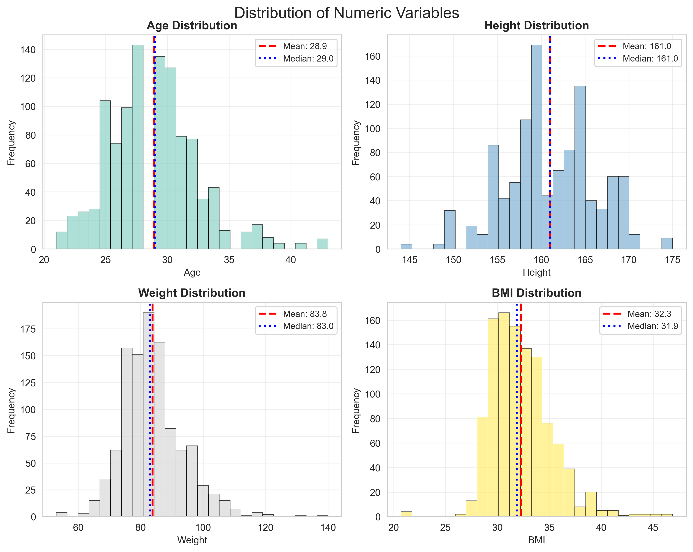
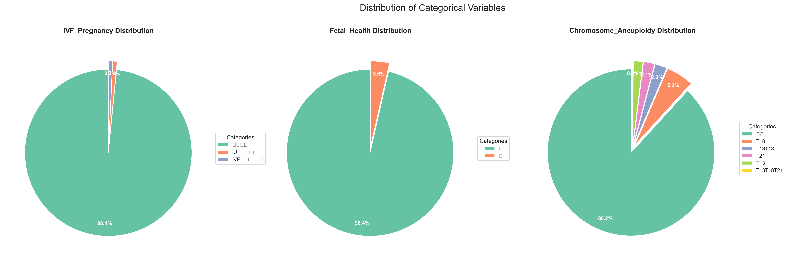
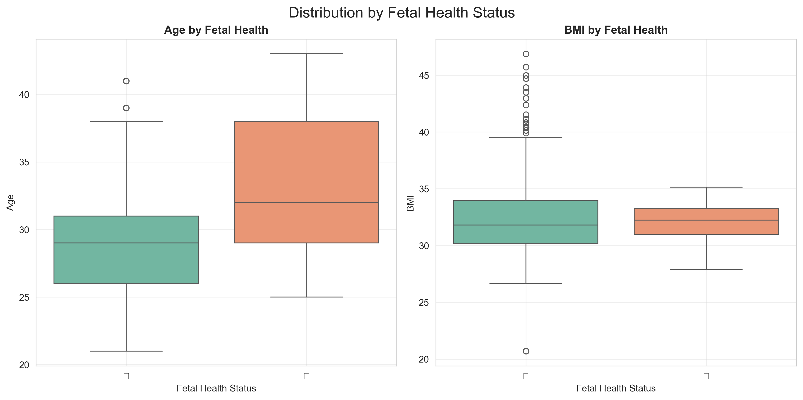

NIPT Exploratory Data Analysis Report
Generated on 2025-09-04 19:29:23
1. Data Overview
1,070
Total Records
31
Total Fields
1,070
Missing Values
96.8%
Data Completeness
2. Visualizations
2.1 Numeric Variable Distributions

Distribution patterns of key numeric variables with statistical indicators
2.2 Variable Correlations

Correlation matrix showing relationships between numeric variables
2.3 Categorical Variable Distributions

Distribution of key categorical variables
2.4 Variable Relationships

Pairwise relationships between key numeric variables
2.5 Group Comparisons

Distribution comparisons by fetal health status
3. Key Findings
Strong Correlations
- Weight ↔ BMI: 0.832
Statistical Test Results
Normality Tests
- 序号: p-value=0.0000 (Non-normal)
- Age: p-value=0.0000 (Non-normal)
- Height: p-value=0.0000 (Non-normal)
- Weight: p-value=0.0000 (Non-normal)
- 检测抽血次数: p-value=0.0000 (Non-normal)
- BMI: p-value=0.0000 (Non-normal)
- 原始读段数: p-value=0.0000 (Non-normal)
- 在参考基因组上比对的比例: p-value=0.0000 (Non-normal)
- 重复读段的比例: p-value=0.0000 (Non-normal)
- 唯一比对的读段数 : p-value=0.0000 (Non-normal)
- GC含量: p-value=0.0000 (Non-normal)
- 13号染色体的Z值: p-value=0.0000 (Non-normal)
- 18号染色体的Z值: p-value=0.0000 (Non-normal)
- 21号染色体的Z值: p-value=0.3921 (Normal)
- X染色体的Z值: p-value=0.0000 (Non-normal)
- Y染色体的Z值: p-value=0.0000 (Non-normal)
- Y染色体浓度: p-value=0.0000 (Non-normal)
- X染色体浓度: p-value=0.0000 (Non-normal)
- 13号染色体的GC含量: p-value=0.0000 (Non-normal)
- 18号染色体的GC含量: p-value=0.0000 (Non-normal)
- 21号染色体的GC含量: p-value=0.0000 (Non-normal)
- 被过滤掉读段数的比例: p-value=0.0000 (Non-normal)
- 生产次数: p-value=0.0000 (Non-normal)
Independence Tests
- IVF_Pregnancy vs Fetal_Health: p-value=0.0000 (Related)
4. Recommendations
Data Quality
The dataset shows good overall quality with high completeness rate. Continue monitoring data collection processes.
Further Analysis
- Investigate strong correlations for potential causal relationships
- Consider non-parametric tests for non-normal distributions
- Explore interaction effects between variables
- Develop predictive models based on identified patterns